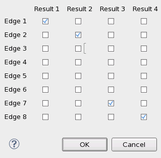
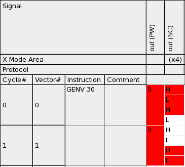
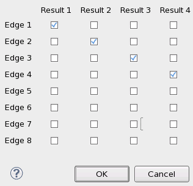
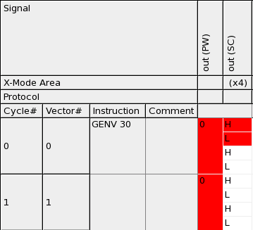
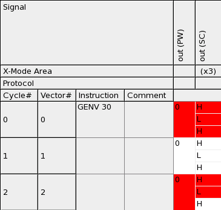

Processing a setup file for (digital) offline result emulation
With digital result emulation, a pattern block of a setup file defines failures within this pattern on the X-cycle level. The result emulation determines the x-mode of the pattern, that is, the number of X-cycles that make up one tester cycle, by looking up the base wavetable of this pattern. If a STATEMAP section is present in the wavetable, this STATEMAP section defines the ratio of X-cycles to tester cycles. If no STATEMAP section exists, this ratio is determined by an analysis of the device cycle names.
The offline result emulation associates every X-cycle within one tester cycle with one receive edge. The result mode (which is set in the Result Configuration window) determines which edges are used. The failure injection requires that you request one bit codes in the result configuration (P/F of the Result Width group in the Result Mode tab), and define the edges in the Edge to Result Relation sub-window, one edge per result (see the example below). The edges that are associated with a failing X-cycle will be set to FAILED.
Examples
Setup file
<offlineResultEmulation>
<pattern name="err_sim">
<pin name="out">
<fail xmode_cycle="0" to="2"/>
<fail xmode_cycle="6" to="7"/>
<fail xmode_cycle="17" to="23"/>
</pin>
</pattern>
</offlineResultEmulation>Now
assume that the base wavetable of pattern err_sim looks as follows for pin
out:
... PINS out 0 "r1:H r2:L r7:H r8:L" HLHL ...
Since no STATEMAP section is present, an X-mode of 4 is inferred from the device cycle name. Thus, the X-cycle blocks 0-3, 4-7, 8-11, and so on, will each make each up one tester cycle.
Since the edges r1, r2, r7, and r8 are used in the (only) waveform, the result mode must be configured as follows:

This will have the effect that, for example, X-cycles 0, 4, 8, ... in the failure injection file are mapped to edge r1, and X-cycles 3, 7, 11, ... to r8. Accordingly, for instance, edges r1, r2, and r7 will be set to FAILED in tester cycle 0, and edges r7 and r8 will be set to FAILED in tester cycle 1.
If the base wavetable of err_sim is also used as the primary
wavetable, these injected results will look in the Pattern Debug tool as follows:

Here, the failing X-cycles correspond to the definitions of the failure injection file.
Selecting the correct edges in the result mode configuration
In order to illustrate the importance of the result mode configuration, we now define the result mode as follows:

Now, X-cycles 2, 6, 10, ... in the error injection file will be mapped to r3 instead of r7, and X-cycles 3, 7, 11, ... to r4 instead of r8. Accordingly, for instance, edges r1, r2, and r3 will be set as FAILED in tester cycle 0, and edges r3 and r4 will be set as FAILED in tester cycle 1.
If again the base wavetable of err_sim is also
used as the primary wavetable, the Pattern Debug tool will display this as:

Since edges r3 and r4 (which are set to FAILED) do not occur in the waveform, and edges r7 and r8 (which do occur in the waveform) are not set to FAILED, only X-cycles 0 and 1 of tester cycle 0 fail, and judging only from the SC (State Character) column, tester cycle 1 even passes.
Defining the result mode for an odd timing x-mode
The possible result
granularities are 1, 2, 4, 6, and 8. If the x-mode of the base wavetable is not a power of 2,
select the smallest result granularity that is greater than the x-mode of the wavetable. Assume,
for example, that the same failure injection file is used as above, but that the only waveform
of the base wavetable for err_sim is
... PINS out 0 "r1:H r2:L r7:H" HLH ...
Then the x-mode will be 3, so that the X-cycle blocks 0-2, 3-5, 6-8, and so on, will each make each up one tester cycle. If you set the result mode again to 4 one bit codes, and select again edges r1, r2, r7, and r8 to be recorded, X-cycles 0, 3, 6, ... of the failure injection file will be mapped to edge r1, X-cycles 1, 4, 7, ... to edge r2, and X-cycles 3, 7, 11, ... to edge r7. If base and primary wavetable are identical, the result will be as required, namely:

Note however that you cannot select the edges to be recorded when the timing x-mode is > 4. In this case 6 or 8 results must be recorded per cycle, but even if you select only 6 results, it is always the first 6 edges that will be recorded.
Functional changes
- Introduced in SmarTest 7.1.3